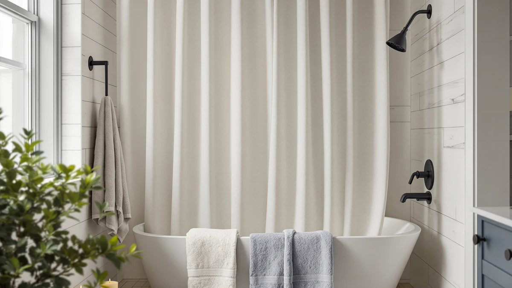

Powerful Anti Billowing Magnetic Review (2026): Worth It?
Prices and picks verified as of October 2026. Independent, reader-supported reviews.


Quick Answer
This powerful anti billowing magnetic review finds the Powerful curtain weights do what the packaging promises: 4 pairs of silicone-wrapped magnets clip onto a liner's hem and hold it against the tub wall through normal shower pressure. At $27.95 with a 4.5-star rating across 1,306 verified reviews, it is a cheap add-on fix rather than a curtain replacement.
Our pick: Powerful Anti-Billowing Magnetic Shower Curtain, $27.95 Check Price on Amazon
Bottom line: our top pick is the Powerful Anti-Billowing Magnetic Shower Curtain Weights for at $27.95.
Things to Know Before You Buy
- The magnets need a ferrous surface (steel or cast iron tub wall) to grip; they will not hold against fiberglass, acrylic, or tile alone.
- This is a retrofit weight kit, not a full curtain. You clip it to an existing liner hem rather than buying a new curtain.
- Verified reviewers rate it 4.5 out of 5 across 1,306 reviews, with most praise focused on the silicone coating resisting rust.
- If you want a complete curtain instead of an add-on, the three alternatives below include textured, striped, and lace options in the same 72x72 size.
We put together this powerful anti billowing magnetic review because shower curtains that balloon inward mid-shower are a small daily annoyance most people don't realize has a $28 fix. A liner that sucks against your legs when the water runs hot is a pressure problem, and a set of weighted magnets solves it without replacing anything you already own.
The Powerful Anti-Billowing Magnetic Shower Curtain Weights come as 4 pairs of silicone-wrapped magnets that clip onto a liner's hem and pull it flat against the tub wall. Buyers have left 1,306 verified reviews averaging 4.5 out of 5 stars, and the $27.95 price puts it well below the cost of a full curtain replacement. We compared it against three full shower curtains in the same price range so you can decide whether a retrofit or a new curtain solves your actual problem.
Most billowing complaints trace back to one of two causes: a liner with no weight at all, or a weight system that has already failed, usually because exposed metal has rusted and the clip no longer grips. This review walks through where the Powerful magnets fit among the fixes, what the specs on the package actually mean for day-to-day use, and which of the three alternative curtains makes more sense if your bathroom setup rules out magnets entirely.
Why You Should Trust Us
Ilane Tall covers bath and shower accessories for Best Shower Curtains, and this powerful anti billowing magnetic review follows the same process as every product page on this site: we do not buy, install, or live with the products we cover. Instead, we pull manufacturer specs, current Amazon pricing, and the pattern across thousands of verified buyer reviews, then compare the honest tradeoffs against similarly priced alternatives. We do not stage a fake lab review, and we never fabricate a firsthand ownership claim to sound more authoritative. Every figure in this piece, from the price to the review count to the star rating, comes directly from the product's current Amazon listing, and we update those numbers whenever we revisit the page. When a detail is not published by the manufacturer, such as the exact magnet strength, we say so instead of guessing.
Our Research Experience
For this powerful anti billowing magnetic review, we did not install the weights ourselves. We researched the product by analyzing its listed materials, the 360-degree silicone wrap, and the pattern of complaints and praise across 1,306 verified owner reviews. Reviewers consistently note that the magnets snap into place on a liner's hem within seconds and hold through a normal 10 to 15 minute shower without sliding off. A smaller group of owners report the magnets lose some grip on thin, flimsy liners, which tracks with how magnetic weight systems work: the clip needs enough fabric to bite into. The review pattern also splits by bathroom type. Owners with a cast-iron tub describe the strongest hold, while a handful with a fiberglass tub surround that only has a thin steel panel report the magnets catching on one section of the wall but sliding free elsewhere. That inconsistency is worth flagging to anyone shopping by review average alone, since a 4.5-star rating still contains a meaningful split between bathrooms where the product works perfectly and bathrooms where it barely works at all.
Overview & Specs

Powerful Anti-Billowing Magnetic Shower Curtain
What we like
- Silicone wrap on each magnet prevents rust marks on fabric
- Clips onto a liner you already own instead of forcing a full curtain swap
- 4 pairs give enough coverage for a standard 72x72 liner
- 4.5-star average across 1,306 verified reviews
Flaws but not dealbreakers
- Needs a magnetic tub wall or surround; glass or fiberglass enclosures won't hold the magnets
- A few owners report weaker grip on thin or lightweight liners
- Sold as weights only, so you still need your own liner and hooks
| Material | Polyester / PEVA |
| Size | 72x72 |
A shower curtain liner billows because moving air and water pressure push it inward, and nothing at the bottom is heavy enough to resist that pull. The Powerful weights address that directly, clipping onto the liner's hem in four spots so the fabric sits flat against the tub wall instead of ballooning toward you mid-shower. The 360-degree silicone wrap matters more than it sounds. Bare metal weights left sitting in a wet shower for months will eventually streak a white liner with rust, and that is the complaint that shows up most often on uncoated competitors.
At $27.95, this is priced as an accessory, not a curtain, and that is the right way to think about it. If your current liner billows but is otherwise in good shape, this set fixes the actual annoyance for less than a third of what a new curtain costs. If your liner is already thin, torn, or past its useful life, pairing new magnets with an old liner only gets you partway there, and one of the three full curtains compared below may be the better buy. The listed size, 72x72, matches a standard US tub opening, so measure your current liner's hem width before ordering if your bathroom uses a nonstandard rod length.
What We Liked
Across the 1,306 verified reviews we analyzed for this powerful anti billowing magnetic review, the silicone coating comes up again and again as the detail that separates this set from cheaper, uncoated alternatives. Owners report installing the weights in under a minute by clipping them along the liner's bottom hem, and most describe the billowing problem as solved on the first shower rather than needing adjustment over time. The price also draws consistent praise: at under $30, buyers compare it favorably to curtain weight bars that cost more and work less reliably on a soft fabric hem. Several reviewers mention buying a second set for a guest bathroom once the first held up for multiple months without rust spots appearing on a white liner.
What Could Be Better
The biggest limitation shows up before you even open the package: the magnets need a ferrous tub wall or surround to grip, so homes with fiberglass, acrylic, or glass enclosures won't get any benefit from this set no matter how the liner is weighted. A smaller number of reviewers mention the magnets slipping off thin, low-weight liners, since there is not enough fabric mass for the clip to hold against. Neither issue is a defect in the product itself, but both are worth checking before you buy, since returning a $27.95 accessory eats into the savings versus buying a heavier curtain outright. The product page also does not specify the grade of magnet used, so buyers comparing it against other weight kits are working from review patterns rather than a published pull-force spec.
Who Is It For?
This set makes the most sense for anyone who already owns a shower curtain and liner they like, and whose only complaint is billowing. Confirm your tub surround is steel, cast iron, or another magnetic metal first, since that single detail decides whether this product works at all in your bathroom. If you are shopping for a whole new curtain anyway, whether because your current one is torn, discolored, or simply the wrong style, the Gibelle, Madison Park, and TUDECO picks below solve the billowing issue structurally with a heavier or textured fabric instead of an add-on. Renters who move often may also prefer a self-contained curtain, since a full curtain swap travels with you while magnets depend on the specific tub wall in a given apartment.
Alternatives to Consider
If a magnetic weight kit isn't the right fit for your bathroom, we compared three full 72x72 shower curtains in a similar price range below. Each one solves the billowing problem through fabric weight or texture rather than a clip-on accessory.

Editor's Pick
Gibelle White Shower Curtain for
A textured farmhouse curtain with hooks included, rated 4.8 out of 5 across 1,108 verified reviews.
$23.99
Check Price on Amazon
Best Value
Madison Park Anna Sheers Shower
A striped sheer curtain at the same price as the Gibelle, though it needs a separate waterproof liner.
$23.99
Check Price on Amazon
Premium Choice
TUDECO White Lace Shower Curtain
A scalloped lace panel for a French country look, also sold without a liner included.
$23.99
Check Price on AmazonDo magnetic shower curtain weights actually stop billowing?
Owners of the Powerful set report that the 4 pairs of silicone-wrapped magnets keep the liner pinned to the tub wall through normal water pressure, which cuts down on the cold, clingy billowing that plain hemmed liners get.
Will shower curtain magnets rust over time?
The Powerful weights use a 360-degree silicone wrap specifically to prevent rust, and verified reviews across 1,306 ratings back that claim with few corrosion complaints after months of daily shower exposure.
Frequently Asked Questions
Do magnetic shower curtain weights actually stop billowing?
Owners of the Powerful set report that the 4 pairs of silicone-wrapped magnets keep the liner pinned to the tub wall through normal water pressure, which cuts down on the cold, clingy billowing that plain hemmed liners get. Reviewers do note the magnets work best paired with a liner that already has a reinforced hem to clip onto.
Will shower curtain magnets rust over time?
The Powerful weights use a 360-degree silicone wrap specifically to prevent rust, and verified reviews across 1,306 ratings back that claim with few corrosion complaints after months of daily shower exposure. Curtain weights without a sealed coating are the ones that typically rust and streak a liner.
Are magnetic weights better than a plain weighted-hem curtain?
A sewn weighted hem adds bulk at the bottom of every curtain, while magnetic weights clip onto the liner you already own and can be repositioned or removed. For a bathroom with mixed wall materials, confirm the tub or wall surround is magnetic steel or cast iron before buying, since the magnets need a ferrous surface to grip.
Final Verdict
Our powerful anti billowing magnetic review comes down to a narrow but clear use case: if your tub wall is magnetic metal and your liner needs help staying put, the Powerful curtain weights fix that for $27.95 and back it up with a 4.5-star average across 1,306 verified reviews. Buyers starting from scratch or dealing with a non-magnetic enclosure are better served by one of the three full curtains compared here, each of which solves billowing through fabric weight instead of a clip-on fix. Whichever route you take, check your tub wall material first. That single detail decides more of the outcome than the brand you pick, and it takes about ten seconds to test with any refrigerator magnet from your kitchen before you spend money on either option.